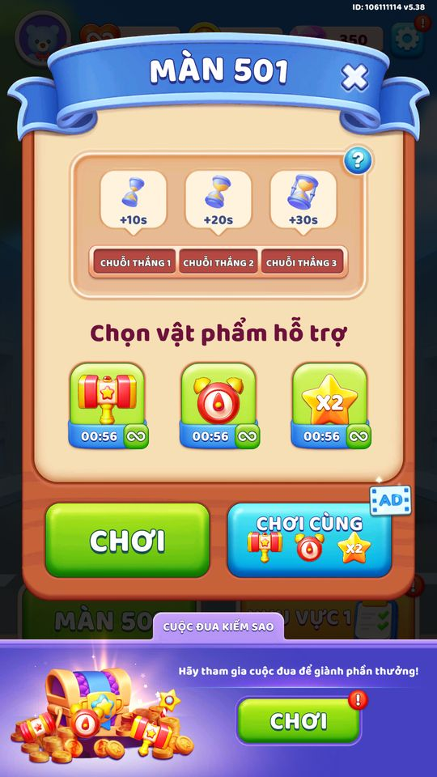
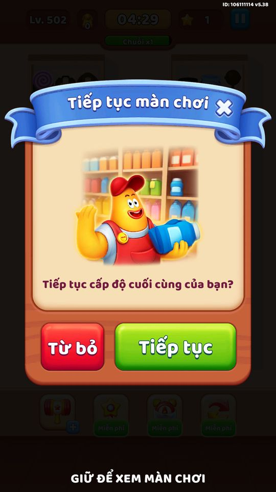
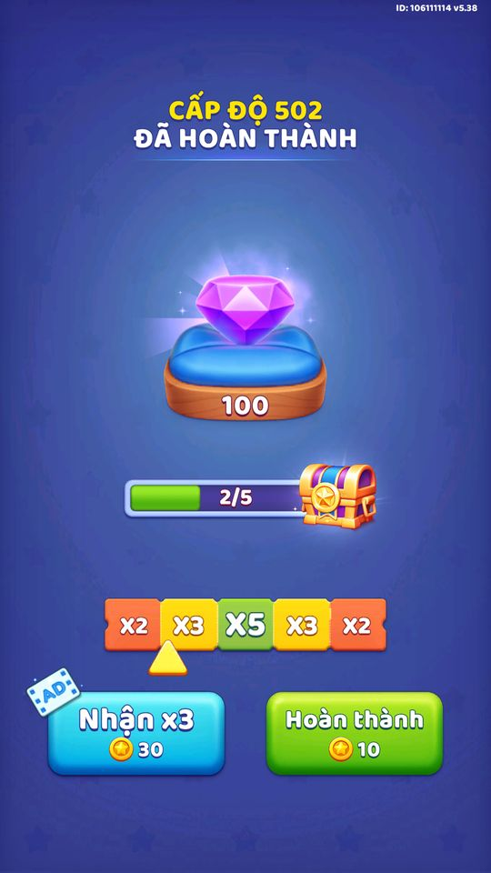
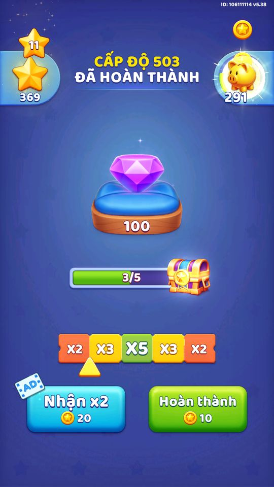
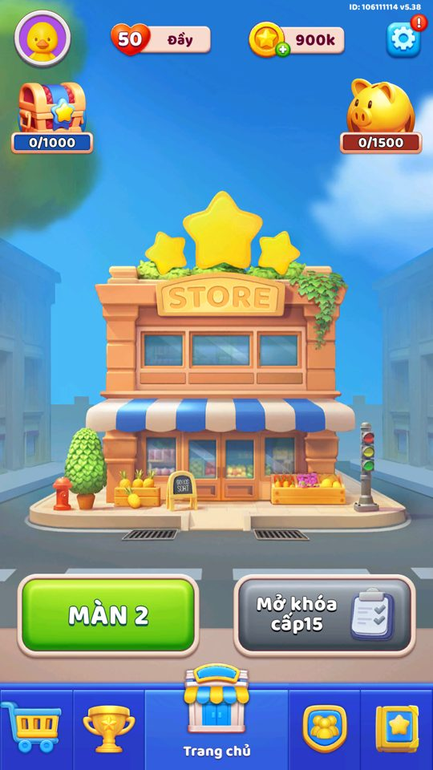

Ảnh chụp màn hình
4.500 màn baked, sau đó server stream màn mới; qua mức trần thì bốc ngẫu nhiên.
Mô tả
- Game theo dõi số màn người chơi đã qua và cách nạp dữ liệu từng màn.
- Level hiện tại lưu mã hoá (key level_en, kiểu ObscuredInt chống chỉnh sửa).
- Khoảng 4.500 màn đầu được baked thành asset SOLevel nạp qua Addressables; các màn vượt mức này được server stream về dưới dạng file txt nén.
- Khi đã qua mức tối đa server cấp, game bốc ngẫu nhiên một màn trong khoảng 500-999 để chơi lại — nội dung không bao giờ hết.
- Mọi mốc level là server-authoritative (max_level_server mã hoá) nên không spoof lên cao được trên máy.
Thiết kế chi tiết
Tóm tắt thiết kế
Playtest Popup trước màn: 3 ô Chuỗi thắng (+10/+20/+30 giây), 3 booster (Búa lớn, +thời gian, ×2 sao), nút Chơi và nút “Chơi cùng” (xem quảng cáo để có cả 3 booster), banner sự kiện đua ở đáy.
Playtest Màn thắng: kim cương (+100 mỗi màn, tiền xây Khu vực), rương mốc 5 màn (2/5, 3/5), thanh hệ số chạy ×2/×3/×5/×3/×2 với nút “Nhận ×N” bằng quảng cáo, hoặc Hoàn thành (10 vàng).
Playtest Về Home sau trận có thể mở liền: Kho báu vô hạn → Rương quý hiếm → Vòng quay may mắn → Kho báu vô hạn lần nữa; có quảng cáo xen kẽ ở lúc vào màn và sau khi thắng (từ màn 6, cách 120 giây).
CodePlaytest Level do server quyết định: save local là 503 nhưng bảng xếp hạng vẫn ghi điểm 2 (level thật của tài khoản). Khoảng 4.500 màn baked trong APK; màn vượt mức stream từ server.
Playtest Mở game sáng 28/10 (lần đầu sau 20 ngày): Chào mừng trở lại → Store Supervisor Offer → Truy tìm báu vật → No Ads → Kho báu vô hạn (trao bù) → Lễ hội Halloween → (xem trước + luật) → Bộ sưu tập kết thúc → Home. Tức 7 popup tự mở liên tiếp, không có giới hạn kiểu 3 popup/phiên như Block Out.
Luồng người chơi từng bước
- Trước mànGiao diện PlaytestChuỗi thắng, booster, Chơi / Chơi cùng (AD).

Popup trước màn 501 - Ván dởGiao diện PlaytestMở lại app giữa màn: Tiếp tục màn chơi / Từ bỏ.

Tiếp tục màn chơi - ThắngClient PlaytestKim cương, rương mốc, thanh hệ số quảng cáo.

Màn thắng 502 
Màn thắng 503 - Về HomeClient PlaytestChuỗi popup sau trận.
- Bảng xếp hạng thấy level serverGiao diện PlaytestĐiểm của tài khoản thử = 2 dù local ở màn 503.


Vận dụng cho game khác
- Màn thắng có thanh hệ số “dừng ở đâu nhận ×N bằng quảng cáo”: biến phần thưởng nhỏ thành một lượt xem rewarded.
- Nhận định Chuỗi popup không giới hạn kéo dài thời gian từ lúc thắng tới lúc chơi màn kế; Block Out giới hạn 2 popup mỗi lượt về Home để tránh việc này.
Bảng tổng hợp mọi tính năng đã làm chi tiết: GoodsSort_ThietKeChiTiet.xlsx.
Còn thiếu / chưa xác minh
Mở khóa & điểm vào
Mặc định bắt đầu ở màn 1. Nhiều tính năng mở theo mốc level (levelUnlockProgressMilestone = 2, các event mở ở màn 5-50). Bằng chứng: RemoteConfig các key levelUnlock*, LevelDataController.get_Level.
Điểm vào:
- Nút Play ở Home đọc LevelDataController.Level
- GenLevelController nạp màn theo level hiện tại
- Đồng bộ với server mỗi khi hoàn thành màn (GameController.UpdateDataToServer)
Cách hoạt động
- LevelDataController.Init đọc save: có key level_en thì nạp LevelData, không thì SetDataToDefault (màn 1).
- Thắng màn -> CompleteLevel tăng level, log Firebase/Funnel (af_complete_level), đẩy lên server (UpdateDataToServer).
- Vào màn <= mức baked: LevelDataContainer tải SOLevel qua Addressables (có nhánh AB theo LevelAbTest).
- Vào màn > mức baked: UpdateLevelFromServerController đã tải file 'server_levels/.../Level {n}.txt' (nén GZip+Base64) rồi giải nén thành LevelInfo.
- Qua mức max server: GenNewLevelMax bốc RandomUtils.RangeInt(500,1000), lưu key lv_m_r.
- Server có thể ghi đè tiến trình bất cứ lúc nào qua UpdateDataFromServer(LevelDataServer).
Luồng chi tiết theo code
LevelDataController.Init đọc save: nếu tồn tại key level_en thì nạp LevelData, nếu không thì SetDataToDefault (level 1). LevelData gồm level (ObscuredInt), numPlay, firstTryWins, failCount, numUsedAdsPassToRevive, numUsedAdsPassToPlay. Khi thắng, CompleteLevel tăng level, log (FirebaseLog.SetMaxLevel, FunnelLog.CompleteLevel, af_complete_level), gọi GameController.UpdateDataToServer; nếu đã ở màn cao nhất (IsPassLevelMax) thì GenNewLevelMax bốc màn mới. Khi vào màn, GenLevelController hỏi LevelDataContainer.GetSOLevelData/TaskGetLevelInfo để nạp SOLevel baked qua Addressables (có nhánh AB theo LevelAbTest). Nếu level vượt mức baked, UpdateLevelFromServerController đã tải sẵn file 'server_levels/.../Level {n}.txt' (nén GZip+Base64, versioned bằng VERSION_OF_LEVEL và MD5_TEXT_LEVELS, có nhánh ab_levels) rồi giải nén thành LevelInfo. CheckSetMaxLevelFromServer cập nhật mức level tối đa server cho phép. Khi người chơi vượt cả mức server: GetLevelRandomWhenMaxLevel đọc/ghi key lv_m_r, GenNewLevelMax bốc ngẫu nhiên RangeInt(500,1000). Tiến trình luôn đồng bộ hai chiều: UpdateDataFromServer(LevelDataServer) ghi đè dữ liệu local bằng dữ liệu server khi cần.
Ảnh chụp màn hình (1)
1 ảnh chụp trong game (BlueStacks/LDPlayer, tài khoản cấp 4). Bấm ảnh để phóng to; nhãn UC dẫn tới use case tương ứng.


Số liệu chính
(không có)
Ghi chú thiết kế
- Không thể spoof level trên máy vì khoá save dẫn xuất từ AccountManager.Code và mức trần server.
- Thắng ngay lần đầu (firstTryWins) được theo dõi riêng trong LevelData.
Use case (8)
Bấm vào từng use case để mở. Mở/đóng tất cả
UC-01 Hoàn thành màn và tăng tiến trình
Các bước- LevelController.EndGame(Win) -> LevelDataController.CompleteLevel
- LevelData.Update tăng level, cập nhật numPlay/firstTryWins
- Ghi save (key pass_lv_{n} đánh dấu đã qua màn max), log Firebase/Funnel
- GameController.UpdateDataToServer đẩy tiến trình lên server
| Actor | Player |
|---|---|
| Trigger | Thắng màn |
| Điều kiện | Đang chơi màn hợp lệ |
| Kết quả | Level tăng, mở màn kế, đồng bộ server |
| Quy tắc / số liệu | GetKeyPassLevelMax = 'pass_lv_{0}'; CompleteLevel log af_complete_level |
| Evidence | LevelDataController.CompleteLevel; LevelData.Update; LevelDataController.GetKeyPassLevelMax; GameController.UpdateDataToServer |
UC-02 Nạp màn baked từ Addressables
Các bước- GenLevelController.InitLevelByCurrentLevel gọi LevelDataContainer.GetSOLevelData(level)
- TaskGetLevelInfo dùng Addressables (AsyncOperationHandle) tải SOLevel
- LevelInfo.IsValidLevel kiểm tra hợp lệ trước khi dựng bàn
| Actor | System |
|---|---|
| Trigger | Vào một màn <= mức baked |
| Điều kiện | SOLevel của màn tồn tại trong asset |
| Kết quả | Bàn chơi dựng từ SOLevel baked |
| Quy tắc / số liệu | Khoảng 4.500 màn đầu được baked (theo bối cảnh dự án) |
| Evidence | LevelDataContainer.GetSOLevelData; LevelDataContainer.TaskGetLevelInfo; GenLevelController.InitLevelByCurrentLevel |
UC-03 Stream màn vượt mức baked từ server
Các bước- UpdateLevelFromServerController.OnGetLevel(last_version, levels_data) lưu từng file 'server_levels/{version}/Level {n}.txt'
- CheckLevel giải nén (CompressingData.DecompressingFromBase64) và LevelInfo.IsValidLevel
- CheckSetMaxLevelFromServer cập nhật mức tối đa
- GetLevelInfo(level) đọc lại file txt khi vào màn
| Actor | Server |
|---|---|
| Trigger | Server trả về danh sách màn mới (OnGetLevel) |
| Điều kiện | Level vượt mức baked |
| Kết quả | Màn mới chơi được dù không có trong bản build |
| Quy tắc / số liệu | File versioned bằng VERSION_OF_LEVEL; nén GZip+Base64 |
| Evidence | UpdateLevelFromServerController.OnGetLevel; UpdateLevelFromServerController.GetFilePath; CompressingData.DecompressingFromBase64; LevelDataController.CheckSetMaxLevelFromServer |
UC-04 Màn biến thể theo A/B từ server
Các bước- OnGetLevelAb(md5_text_levels, ab_levels_value, delete_all_old_txts, levels_data)
- Lưu vào thư mục 'server_levels/ab_levels/', versioned bằng MD5_TEXT_LEVELS
- GetAbTestName(level)/GetFilePathAb chọn file AB khi vào màn
- Có thể xoá toàn bộ txt cũ nếu delete_all_old_txts
| Actor | Server |
|---|---|
| Trigger | Server trả về bộ màn AB (OnGetLevelAb) |
| Điều kiện | Người chơi thuộc nhánh AB có bộ màn riêng |
| Kết quả | Cùng số màn nhưng bố cục khác nhau giữa các nhánh AB |
| Quy tắc / số liệu | LevelConfig.AB_LEVELS_VALUE lưu nhánh AB hiện tại |
| Evidence | UpdateLevelFromServerController.OnGetLevelAb; UpdateLevelFromServerController.GetFilePathAb; LevelConfig.AB_LEVELS_VALUE |
UC-05 Hết màn server -> bốc màn ngẫu nhiên chơi lại
Các bước- GenNewLevelMax gọi RandomUtils.RangeInt(500, 1000)
- Lưu kết quả vào key lv_m_r (mã hoá)
- GetLevelRandomWhenMaxLevel đọc lại để nạp màn
| Actor | System |
|---|---|
| Trigger | Đã vượt mức level tối đa server cấp |
| Điều kiện | IsPassLevelMax() = true |
| Kết quả | Người chơi 'end-game' tiếp tục chơi các màn 500-999 ngẫu nhiên thay vì hết nội dung |
| Quy tắc / số liệu | RangeInt(500,1000) — đọc thẳng từ pseudo-C GenNewLevelMax |
| Evidence | LevelDataController.GenNewLevelMax; LevelDataController.GetLevelRandomWhenMaxLevel; RandomUtils.RangeInt |
UC-06 Đồng bộ tiến trình từ server
Các bước- LevelDataController.UpdateDataFromServer(LevelDataServer)
- LevelData.Update ghi đè level/numPlay/failCount... bằng dữ liệu server
- Cập nhật độ khó (Level_DifficultSheet) và lưu lại (Save)
| Actor | Server |
|---|---|
| Trigger | Server gửi LevelDataServer |
| Điều kiện | Đăng nhập / reconnect |
| Kết quả | Local khớp với server; chống chơi vượt mức (server-authoritative) |
| Quy tắc / số liệu | LevelDataServer mirror đúng các field của LevelData |
| Evidence | LevelDataController.UpdateDataFromServer; LevelDataServer; LevelData.Update |
UC-07 Lưu level mã hoá chống chỉnh sửa
Các bước- LevelData.level kiểu ObscuredInt (CodeStage AntiCheat)
- Save ghi qua SaveLoadHandler với khoá dẫn xuất từ AccountManager.Code + MD5
- max_level_server lưu riêng, so khớp khi load
| Actor | System |
|---|---|
| Trigger | Mỗi lần thay đổi level |
| Điều kiện | - |
| Kết quả | Không spoof được level trên máy vì khoá dẫn xuất và mức trần server |
| Quy tắc / số liệu | key_en='level_en', key_max_level_server='max_level_server', key_level_max_random='lv_m_r' |
| Evidence | LevelData.level (ObscuredInt); LevelDataController.Save; SaveLoadHandler.GetEncryptKeyNew; AccountManager.get_Code |
UC-08 Dùng ads-pass để chơi/revive khi hết điều kiện
Các bước- CanUseAdsPassToPlay / CanUseAdsPassToRevive kiểm tra numUsedAdsPassToPlay/Revive
- SetUseAdsPassToPlay / SetUseAdsPassToRevive ghi đã dùng + DelayUpdateToServer
| Actor | Player |
|---|---|
| Trigger | Hết mạng hoặc cần revive |
| Điều kiện | Còn lượt ads-pass của màn |
| Kết quả | Cho phép xem quảng cáo để chơi hoặc hồi sinh, có giới hạn theo màn |
| Quy tắc / số liệu | Số lần lưu trong LevelData.numUsedAdsPassToPlay / numUsedAdsPassToRevive |
| Evidence | LevelDataController.CanUseAdsPassToPlay; LevelDataController.SetUseAdsPassToRevive; LevelData |
Cấu hình (10)
Gộp mọi nguồn: const trong code, JSON mặc định trong Resources, bảng static, storage key, AB test, cờ server.
| Nguồn | Key | Kiểu | Giá trị | Ý nghĩa | Nơi định nghĩa |
|---|---|---|---|---|---|
| code const | key_en | string | level_en | Key save chứa level hiện tại (ObscuredInt) | LevelDataController (const) |
| code const | key_max_level_server | string | max_level_server | Key save chứa mức level tối đa server cho phép | LevelDataController (const) |
| code const | key_level_max_random | string | lv_m_r | Key save chứa màn ngẫu nhiên khi đã qua mức max | LevelDataController (const) |
| code const | GetKeyPassLevelMax | string | pass_lv_{0} | Key đánh dấu đã qua màn tối đa | LevelDataController.GetKeyPassLevelMax |
| code const | GenNewLevelMax random range | range | RangeInt(500, 1000) | Khoảng màn bốc ngẫu nhiên khi vượt mức max server | LevelDataController.GenNewLevelMax |
| config class | LevelData | class | level:ObscuredInt, numPlay:int, firstTryWins:int, failCount:int, numUsedAdsPassToRevive:int, numUsedAdsPassToPlay:int | Dữ liệu tiến trình lưu local | class LevelData |
| config class | LevelDataServer | class | level, numPlay, firstTryWins, failCount, numUsedAdsPassToRevive, numUsedAdsPassToPlay | Bản sao LevelData để đồng bộ server (server-authoritative) | class LevelDataServer |
| server info | server_levels / ab_levels | folder + txt files | do server (file 'Level {n}.txt' nén GZip+Base64, versioned bằng VERSION_OF_LEVEL / MD5_TEXT_LEVELS) | Nguồn màn stream cho các level vượt mức baked | UpdateLevelFromServerController.GetFilePath / OnGetLevel / OnGetLevelAb |
| json default | levelUnlockProgressMilestone | int | 2 | Mốc level mở Progress Milestone | RemoteConfig / remoteconfig_defaults.tsv |
| server info | baked level count | int | ~4.500 (theo bối cảnh dự án) | Số màn được baked sẵn trong bản build; vượt mức này thì stream từ server | LevelDataContainer (Addressables SOLevel) + UpdateLevelFromServerController |
Backend / server
| Command | Chiều | Mục đích |
|---|---|---|
GameController.UpdateDataToServer / DelayUpdateToServer | client→server | Đẩy tiến trình level sau khi thắng/thua hoặc dùng ads-pass |
UpdateLevelFromServerController.OnGetLevel / OnGetLevelAb | server→client | Tải bộ màn mới (và biến thể AB) về máy dưới dạng file txt nén |
LevelDataController.UpdateDataFromServer | server→client | Đồng bộ ghi đè tiến trình bằng LevelDataServer (chống spoof) |
Giao diện (UI)
| Element | Class | Mục đích |
|---|---|---|
| Nút Play ở Home | LevelDataController.Level | Vào màn hiện tại theo tiến trình |
Analytics (1)
| Event | Tham số | Khi nào |
|---|---|---|
af_complete_level / af_completed_level / completed_tutorial | level | Khi hoàn thành màn (FirebaseLog.LogEventLevelComplete, SetMaxLevel) |
Storage keys
level_en max_level_server lv_m_r pass_lv_{0}
Chưa đọc được / ghi chú
- Mức max_level_server và nội dung từng file 'Level {n}.txt' do server cấp, mã hoá; không spoof/đọc trước được trên máy — nhiều màn cao chỉ mô tả cơ chế, không chụp được.
- Con số 4.500 màn baked lấy từ bối cảnh dự án; code chỉ cho thấy cơ chế baked (Addressables) + stream (server_levels) chứ không ghi tổng số cụ thể.
Tính năng liên quan
Cơ chế sort hàng hoá Độ khó màn (Normal/Hard/Super) Siêu giải đấu (Super League) Mạng / Tim (Lives) Master Pass (battle pass)
Nguồn đã đọc
- features/LevelDataController.md
- features/UpdateLevelFromServerController.md
- features/GenLevelController.md
- PseudoC/Assembly-CSharp/LevelDataController.c
- PseudoC/Assembly-CSharp/UpdateLevelFromServerController.c
- UnityExport/.../LevelDataContainer.cs
- UnityExport/.../LevelDataServer.cs
- facts/config/remoteconfig_defaults.tsv
- facts/capture-notes.md